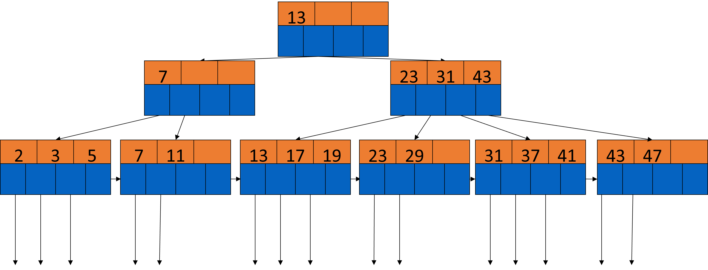
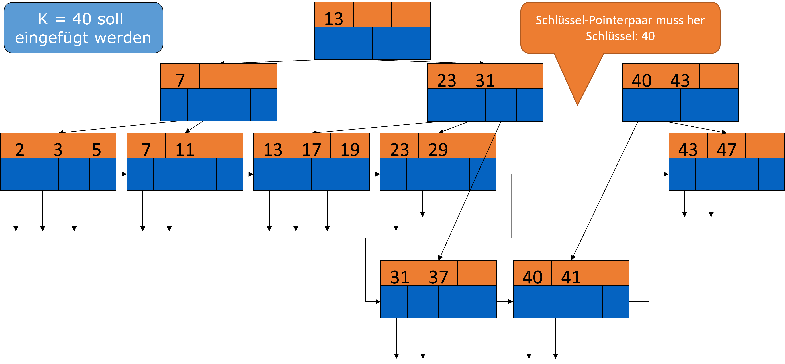
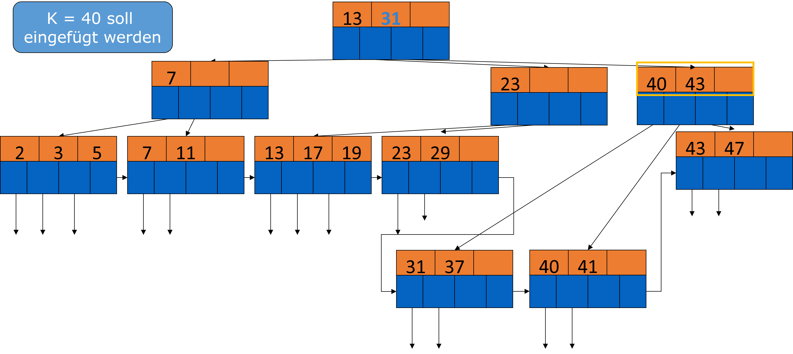
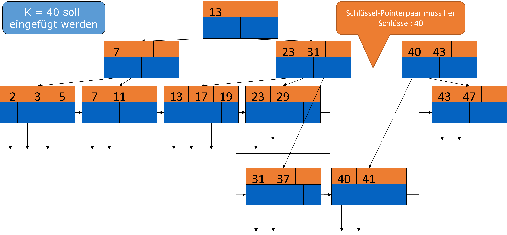
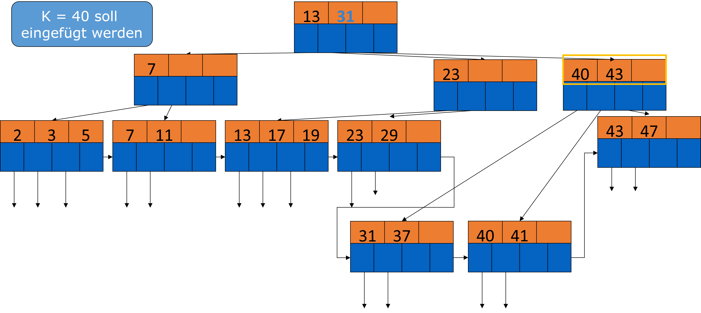
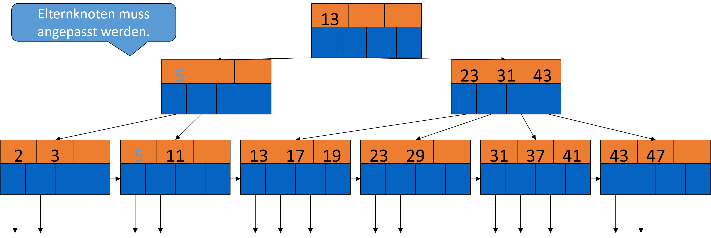
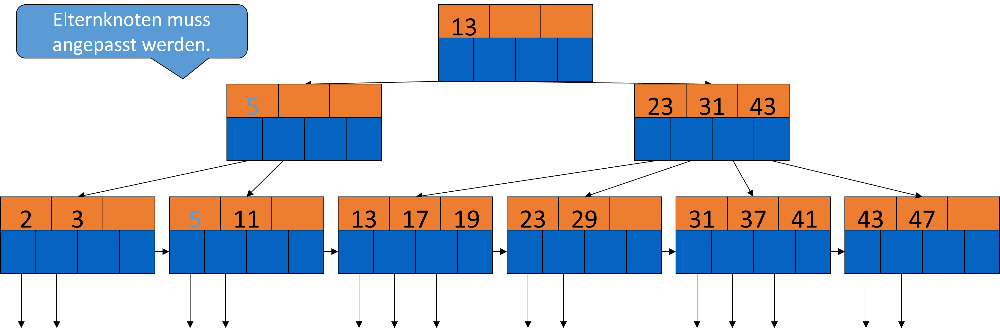

3. Indizes#
Motivation
Im vorherigen Kapitel wurde schon erwähnt, dass der Zugriff auf Daten durch Indizes beschleunigt werden kann. Nach einem naiven Ansatz, wo die Datensätze beliebig verteilt sind, muss jeder Block untersucht werden, wenn wir die Anfrage SELECT * FROM R ausführen. Eine Verbesserung davon wäre es, die Tupel einer Relation zusammenhängend zu speichern. Wenn wir die Anfrage SELECT * FROM R WHERE a=10 ausführen wollen, müssen jefoch alle Datensätze betrachtet werden.
Noch besser im Gegensatz dazu, ist die Benutzung von Indizes. Es werden Eigenschaften von Datensätzen (z.B: Feldwert), wie z.B „Suchschlüssel“ (nicht zu verwechseln mit Primärschlüssel, Sekundärschlüssel, Sortierschlüssel)festgelegt. Der Suchschlüssel ist der Wert, nach welchem gesucht werden soll. Das Ziel ist unteranderem I/O-Kosten zu minimieren und nur möglichst wenige Datensätze zu betrachten. Durch richtiges Verwenden von Indizes, kommt es zu einem schnelleren Output der entsprechenden Tupel.

3.1. Indizes auf sequenziellen Dateien#
3.1.1. Einfachste Form eines Index#
Je nachdem wie die Tupel organisiert sind, gibt es verschiedene Varianten Indizes anzulegen. Die einfachste From davon ist wenn eine nach unserem Suchschlüssel sortierte Datei gegeben ist. Dazu gibt es eine Indexdatei, welche Schlüssel-Pointer Paare enthält. Jeder Schlüsselwert K ist mit einem Pointer verbunden, welcher auf den Datensatz zeigt, der den Schlüsselwert K enthält. Davon gibt es zwei Varianten, einmal den dichtbestzten und einmal den dünnbesetzten Index. Im dichtbesetzten Index gibt es für jeden Datensatz einen Eintrag im Index. Im dünnbesetzten Index, werden nur einige Datensätze im Index repräsentiert, z.B ein Eintrag pro Block.
Sequenzielle Dateien: Index Beispiel In der folgenden Abbildung sind sequenzielle Daten dargestellt. Es werden jeweils zwei Tupel pro Block gespeichert und es werden insgesamt 5 Blöcke, für unsere 10 Tupel benötigt. In unserem Beispiel ist der Schlüssel eine Zahl, häufig ist der Suchschlüssel auch der Primärschlüssel. Das Schlüsselfeld steht einfachkeitshalber an erster Stelle. Um beispielsweise den Wert 70 zu finden, müssen 4 Blöcke gelesen werden. Im folgenden sehen wir, wie das mit Indizes verbessert werden kann.

3.1.2. Dichtbesetzte Indizes#
Ein dichtbesetzter Index, bildet sich aus einer Blocksequenz mit Schlüssel-Pointer Paaren. Jeder Schlüssel der Daten ist durch ein Paar repräsentiert. Aber die Datenmenge ist wesentlich kleiner, da im Index nur auf bestimmte Attribute gezeigt wird. Daher passt der Index womöglich in den Hauptspeicher und braucht nur einen I/O pro Zugriff. Die Sortierung der Paare entspricht der Sortierung der Daten.
Anfragebearbeitung mit dichtbesetzten Indizes
Es ist ein Suchschlüssel K Gegeben. Die Indexdatei wird nach K durchsucht und es wird dem zugehörigen Pointer gefolgt. Der Block wird dann aus der Datendatei geladen. Wenn die Indexdatei nur wenige Blöcke hat, befindet sich die Indexdatei schon im Hauptspeicher. Andernfalls wird die binäre Suche angewendet um K zu finden.
Beispiel: Wir haben 1.000.000 Tupel gegeben. Ein Block speichert 4096 Byte = 10 Tupel. Die Gesamtgröße beträgt demnach 400 MB. Zusätzlich belegt ein Schlüsselfeld je 30 Byte und ein Pointer 8 Byte, d.h. wir haben 100 Paare pro Block. Für einen dichtbesetzten Index sind 10.000 Blöcke notwendig, das sind 40 MB(vielleicht OK im Hauptspeicher). Bei der binären Suche werden 13-14 Blocks pro Suche betrachtet(log2(10.000) ≈ 13). Es reicht wenn die wichtigsten Blöcke im Hauptspeicher sind.
{kind=link}
3.1.3. Dünnbesetzte Indizes#
Da wir eine sortierte Liste gegeben haben, kann auch ein dünnbesetzter Index eingesetzt werden. Hierbei ist der Schlüsselwert der kleinste Wert des referenzierten Blocks und es gibt nur einen Pointer pro Block. Der Vorteil ist weniger Speicherbedarf, jedoch erhöht sich der Suchaufwand.
Beispiel:
Wir haben 1.000.000 Tupel gegeben. Ein Block speichert 4096 Byte = 10 Tupel. Die Gesamtgröße beträgt demnach 400 MB. Zusätzlich belegt ein Schlüsselfeld je 30 Byte und ein Pointer 8 Byte, d.h. wir haben 100 Paare pro Block. Nun gibt es 100.000 Datenblöcke und 100 Indexpaare pro Block. Demnach sind für einen dünnbesetzten Index 1.000 Blocks = 4MB notwendig, welches erheblich weniger als 400MB ist.
3.1.3.1. Anfragebearbeitung mit dünnbesetzten Indizes#
Suche im Index größten Schlüssel, der kleiner/gleich als Suchschlüssel ist(leicht modifizierte binäre Suche)
Hole assoziierten Datenblock
Durchsuche Block nach Datensatz
Was kann ein dünnbesetzter Index nicht?
Mit ausschließlich einem dünnbesetzten Index kann nicht überprüft werden, ob ein bestimmter Wert vorhanden ist oder nicht. Beispiel: SELECT 'TRUE' FROM R WHERE a=10. Mit einem dicht-besetzten Index ist das möglich. Gleiches gilt für einen Semi-Join.


3.1.4. Mehrstufiger Index#
Auch ein Index kann unangenehm groß sein, z.B GB groß oder sogar größer als die Datensätze selbst. Das nimmt viel Speicher ein und kostet viel I/O, auch bei binärer Suche. In diesem Fall lohnt es sich die Indexdatei auch zu indexieren. Der zweite Index macht nur als dünnbesetzten Index Sinn. Theoretisch sind auch dritte, vierte, … Ebenen möglich, in diesen Fällen ist ein B-Baum besser geeignet (dazu später).
Mehrstufiger Index Beispiel
Wir haben 1.000.000 Tupel gegeben. Ein Block speichert 4096 Byte = 10 Tupel. Die Gesamtgröße beträgt demnach 400 MB. Zusätzlich belegt ein Schlüsselfeld je 30 Byte und ein Pointer 8 Byte, d.h. wir haben 100 Paare pro Block. Nun gibt es 100.000 Datenblöcke und 100 Indexpaare pro Block. Für den Index erster Stufe sind 1.000 Blöcke = 4MB und für den Index zweiter Stufe = 40KB nötig. Der Index kann daher mit Sicherheit im Hauptspeicher verbleiben.
Vorgehen zur Anfragebearbeitung
Suche im Index zweiter Stufe größten Schlüssel, der kleiner/gleich als Suchschlüssel ist.
Hole entsprechenden Block im Index erster Stufe (eventuell schon im Hauptspeicher)
Suche in dem Block größten Schlüssel, der kleiner/gleich als Suchschlüssel ist.
Hole entsprechenden Datenblock.
Suche Datensatz (falls Index erster Stufe dünnbesetzt ist).
=> Für das Beispiel oben sind zusammen nur 2 I/Os nötig
{kind=link}
3.1.5. Indizes für Nicht-eindeutige Suchschlüssel#
Bisher haben wir angenommen, das unser Suchschlüssel auch ein Schlüssel ist bzw. nur maximal einmal in unserer Relation vorkommt. Jetzt betrachten wir die Indexwahl, wenn der Suchschlüssel nicht-eindeutig ist. Wir nehmen weiterhin an, dass die Relation nach unserem Suchschlüssel sortiert ist.
Idee 1: Dichtbesetzter Index
Es gibt ein Paar im Index für jeden Datensatz. Die Anfragebearbeitung verläuft wie folgt:
Suche erstes Paar mit K.
Wähle alle weiteren mit K (direkt dahinter)
Hole entsprechende Datensätze.
Idee 2: Nur ein Indexpaar pro eindeutigem Schlüsselwert K
Der Index zeigt auf den ersten Datensatz mit K. Alle weiteren Datensätze mit K folgen direkt. Wichtig zu beachten ist hier, dass die Blöcke Pointer auf den jeweils nächsten Block haben.

Idee 3: Dünnbesetzter Index wie gehabt Der Datenwert wird jeweils am Blockanfang des Datensatzes indexiert. Die Anfragebearbeitung ist wie folgt:
Suche letzten Eintrag E1 im Index, dessen Datenwert ≤ K
Suche von dort im Index nach vorn bis zu einem Eintrag E2 mit Datenwert < K
Hole alle Datenblöcke zwischen und inklusive E1 und E2.
Beispiel: Wir suchen K = 20. Zuerst muss im “10er-Block” gesucht werden ,da womöglich auch in diesem Block eine 20 ist. Rückwärtssuche ist nötig

Idee 4: Dünnbesetzter Index, aber…
…der im Index gespeicherte Datenwert ist der kleinste neue Wert im entsprechenden Datenblock.
Die Anfragebearbeitung ist so einfacher:
Suche im Index nach Paar mit (Datenwert = K) oder (größter Wert mit < K aber nächster Wert ist > K).
Hole Datenblock und gegebenenfalls folgende Datenblöcke.
Im Beispiel unten zeigt das ⊥ ,dass nach der „30“ kein neuer kleinster Wert mehr kommt.

3.1.6. Änderungsoperationen#
Daten ändern sich (Insert, Update, Delete).
Annahme bisher: Daten füllen Blöcke perfekt und ändern sich nicht
Änderungen im Datenblock: Siehe auch voriger Foliensatz
Overflow Blocks
In dünnbesetzten Indizes nicht repräsentiert
Neue Blöcke in der Sequenz
Benötigen neuen Indexeintrag
Indexänderungen bergen dieselben Probleme wie Datenänderungen: Platzierung der Blöcke; Indizes höherer Stufe
Tupel verschieben
Index muss angepasst werden.
Generelle Regel: Indizes können wie normale data files behandelt werden. Gleiche Strategien können angewendet werden.
Änderungsoperationen Beispiele
Beispiel 1
Datensatz mit K = 30 wird gelöscht.
Annahme: Block kann/soll nicht reorganisiert werden.
Ersatz durch tombstone
Datensatz 40 wird nicht verschoben.
Index kann reorganisiert werden.
Main memory

Beispiel 2
Datensatz mit K = 30 wird gelöscht.
Annahme: Block kann/soll reorganisiert werden.
Datensatz 40 wird verschoben
Index wird aktualisiert
Nun auch Datensatz mit K=40 Löschen
Leerer Block entsteht
Index wird aktualisiert (löschen)
Index wird reorganisiert

Beispiel 3
Einfügen eines Datensatzes 15
Block 1 ist voll.
Datensatz 20 wird in nächsten Block verschoben.
Block wird reorganisiert.
Datensatz 15 wird eingefügt.
Index wird aktualisiert.
20 statt 40

Beispiel 4
Wieder Datensatz 15 einfügen
Diesmal mit Overflow Blocks
Block 1 ist voll.
Datensatz 20 wird in Overflow Block verschoben.
Datensatz 15 wird eingefügt.
Index bleibt gleich

3.2. Sekundärindizes auf nichtsequenziellen Dateien#
3.2.1. Motivation#
Annahme bisher: Datensätze sind nach Schlüssel sortiert
„Primärindex“
Oft sinnvoll: Mehrere Indizes pro Relation
Schauspieler(Name, Adresse, Geschlecht, Geburtstag)
Name ist Primärschlüssel => Primärindex
SELECT Name, Adresse
FROM Schauspieler
WHERE Geburtstag = DATE '1952-01-01'
Sekundärindex auf Geburtstag beschleunigt Anfragebearbeitung.
CREATE INDEX GEB_IDX ON Schauspieler(Geburtstag)
Sekundärindizes bestimmen nicht Platzierung der Datensätze, sondern geben Speicherort an.
Dünnbesetzte Sekundärindizes sind sinnlos.
=> Sekundärindizes sind immer dichtbesetzt.
3.2.2. Aufbau von Sekundärindizes#
Dichtbesetzt; mit Duplikaten
Schlüssel-Pointer Paare
Schlüssel sind sortiert
Index zweiter Stufe wäre wiederum dünnbesetzt
Suche kostet idR mehr I/O
Beispiel: Suche nach „20“ muss 5 Blöcke lesen.
Ist nicht zu ändern: Daten sind halt nach einem anderen Schlüssel sortiert.

3.2.3. Anwedungen#
Unterstützung von Selektionsbedingungen auf Nicht-Primärschlüssel
Datensätze liegen nicht sortiert vor.
Sekundärindex auf Primärschlüssel
Datensätze aus zwei Relationen werden geclustered gespeichert.
N:1 Beziehung zwischen R und S
Speichere Datensätze aus R direkt beim entsprechenden Datensatz aus S.
Clustered file
Anwendung: Clustered file
Filme(Titel, Jahr, Länge, inFarbe, Studioname, Produzent)
Studio(Name, Adresse, Präsident)
Häufige mögliche Anfrageform:
SELECT Titel, Jahr
FROM Filme, Studio
WHERE Filme.Studioname = Studio.Name
AND Präsident = ?
Index auf Präsident findet schnell Studio-Datensatz.
Entsprechende Filme folgen direkt.
Anfragen direkt nach Filmen benötigen ebenfalls einen Sekundärindex
{kind=link}
3.2.4. Indirektion für Sekundärindizes#
Bisherige Struktur verbraucht Platz: Datenwerte werden im Index mehrfach gespeichert.
Spart Platz, falls
Suchschlüssel größer sind als Bucketeintrag.
Suchschlüssel im Durchschnitt mindestens zweimal auftauchen.
Weiterer Vorteil: Bestimmte Anfragen können direkt anhand der Buckets beantwortet werden.
Mehrere Selektionsbedingungen, jeweils mit Sekundärindex: Schnittmenge der Pointer in Buckets
Filme(Titel, Jahr, Länge, inFarbe, Studioname, Produzent)
SELECT Titel FROM Filme
WHERE StudioName = 'Disney'
AND Jahr = 1995

Indirektion im Alltag

3.2.5. Invertierte Indizes#
Motivation: Dokumenten-Retrieval
Sichtweise Dokument als Relation
Dok(hatKatze, hatHund, hatHaus, …)
Tausende/Millionen Boolesche Attribute: True bedeutet das Dokument enthält das Wort.
Idee 1: Sekundärindex auf jedes Attribut
Aber: Nur die True-Werte werden indiziert
Idee 2: Alle Indizes in einen kombiniert, die „invertierte Liste“
Verwendet Indirektion
Pointer in den Buckets
Auf ein Dokument
Auf eine Stelle im Dokument
Erweiterung: Bucket speichert nicht nur Stelle sondern auch Metadaten
Art des Vorkommens (Titel, Abstract, Text, Tabelle, …)
Satz (fett, kursiv, …)
…
Anfragen: AND, OR, NOT
Durch Mengenoperationen auf den Pointermengen
Suche nach Dokumenten, die Hunde und Katzen vergleichen
Dokument erwähnt „Hund“ im Titel
Dokument erwähnt „Katze“ in einem Anker (Link auf anderes Dokument)


3.2.6. B-Bäume#
3.2.6.1. Allgemein#
Bisher: Zweistufiger Index zur Beschleunigung des Zugriffs
Allgemein: B Bäume (hier „B+ Bäume“)
So viele Stufen wie nötig
Blöcke sind stets mindestens zur Hälfte gefüllt
Overflow blocks nicht notwendig


{kind=link}
3.2.6.2. Struktur#
Index-Blöcke in einem Baum organisiert
Balanciert
Jeder Weg von Wurzel zu Blatt ist gleich lang.
Parameter n
Jeder Block enthält bis zu n Suchschlüssel
Jeder Block enthält bis zu n+1 Pointer
Also wie Indexblock zuvor, aber ein zusätzlicher Pointer
Wahl von n
n so groß wie möglich entsprechend der Blockgröße
4096 Byte pro Block; 4 Byte pro Schlüssel; 8 Byte pro Pointer
4n + 8(n+1) ≤ 4096 => n = 340
Erinnerung: Datenstrukturen und Algorithmen: B-Bäume
„Maximale Ausgeglichenheit“
3.2.6.3. Einfügen in B-Bäume – Beispiel#

3.2.6.4. Hier B+ Baum**#
Schlüssel in Blätter sind Schlüssel aus den Daten
Sortiert über alle Blätter verteilt (von links nach rechts)
Wurzel: mindestens zwei verwendete Pointer.
Alle Pointer zeigen auf einen B-Baum Block in Ebene darunter.
Blätter: Der letzte Pointer zeigt auf das nächste Blatt (rechts).
Von den übrigen n Pointern werden mindestens \(\lfloor(n+1)/2\rfloor\) verwendet.
Zeigen auf Datenblöcke
Innere Knoten: Pointer zeigen auf B-Baum Blöcke darunterliegender Ebenen
Mindestens \(\lceil(n+1)/2\rceil\) sind verwendet
Falls j Pointer verwendet werden, gibt es j–1 Schlüssel in dem Block
Keys K1, … , Kj-1
Erster Pointer zeigt auf Teilbaum mit Schlüsselwerten < K1.
Zweiter Pointer auf Teilbaum mit Schlüsselwerten ≥ K1 und < K2 usw
3.2.6.5. Rechenbeispiele#
n = 3
Alle Knoten: Maximal 3 Suchschlüssel und 4 Pointer
Wurzel: Mindestens 1 Suchschlüssel und 2 Pointer
Innere Knoten: Mindestens 1 Suchschlüssel und 2 Pointer
Blätter: Mindestens 2 Suchschlüssel und 3 Pointer
n = 4
Alle Knoten: Maximal 4 Suchschlüssel und 5 Pointer
Wurzel: Mindestens 1 Suchschlüssel und 2 Pointer
Innere Knoten: Mindestens \(\lceil(n+1)/2\rceil\) Pointer = 3 Pointer
=> Mindestens 2 Suchschlüssel
Blätter:
1 Pointer zum nächsten Blatt + mindestens \(\lfloor(n+1)/2\rfloor\) weitere Pointer = 3 Pointer
=> Mindestens 2 Suchschlüssel n = 5
Alle Knoten: Maximal 5 Suchschlüssel und 6 Pointer
Wurzel: Mindestens 1 Suchschlüssel und 2 Pointer
Innere Knoten: Mindestens \(\lceil(n+1)/2\rceil\) Pointer = 3 Pointer
=> Mindestens 2 Suchschlüssel
Blätter:
1 Pointer zum nächsten Blatt + mindestens \(\lfloor(n+1)/2\rfloor\) weitere Pointer = 4 Pointer
=> Mindestens 3 Suchschlüssel
{kind=link}
3.2.6.6. Alternative Definition#
Bisher: Parameter n
Block hat mindestens \(\lfloor(n+1)/2\rfloor\) Suchschlüssel
Block hat höchstens n Suchschlüssel
Alternativ in Lehrbüchern: Parameter k
Block hat mindestens k Suchschlüssel
Block hat höchstens 2k Suchschlüssel
Block hat immer x + 1 Pointer (wie bisher)
Immer
Ein innerer Block hat immer einen Pointer mehr als Anzahl Suchschlüssel
Ein Blatt hat immer ebenso viele Pointer wie Suchschlüssel
Plus verkettete Liste
3.2.6.7. Beispiel Blattknoten#
Volles Blatt

Teilweise gefülltes Blatt
{kind=link}
3.2.6.8. Beispiel innerer Knoten#
Voller innerer Knoten
{kind=link}
Teilweise gefüllter innerer Knoten
{kind=link}
3.2.6.9. Beispiel B-Baum#
Dicht-besetzt: In den Blättern taucht sortiert jeder Schlüssel genau einmal auf.
{kind=link}
3.2.6.10. Anwendungen von B-Bäumen#
B-Bäume können verschiedene Index-Rollen übernehmen.
Suchschlüssel ist Primärschlüssel; dicht-besetzter Index
Data file sortiert oder nicht
Dünn-besetzter Index; data file ist sortiert
„Dünn-besetzter“ Index; data file ist nicht sortiert
Indirektion
Suchschlüssel ist nicht Primärschlüssel
Data file ist nach Suchschlüssel sortiert
Pointer zeigen auf jeweils ersten Wert
Jetzt dazu mehr …
3.2.6.11. B-Bäume auf nicht-Primärschlüsseln#
Bedeutung der Pointer auf inneren Ebenen ändert sich.
Gegeben: Schlüssel K1, … , Kj
=> Ki ist der kleinste neue Schlüsselwert, der vom (i+1)-ten Pointer erreichbar ist.
D.h. es gibt keinen Schlüsselwert Ki im linken Teilbaum aber mindestens ein Vorkommen des Schlüsselwertes im Teilbaum vom (i+1)-ten Pointer an.
Problem: Es gibt nicht immer einen solchen Schlüssel


3.2.7. B-Bäume Suche#
3.2.7.1. Allgemein#
Jetzt wieder: Suchschlüssel = Primärschlüssel
Dicht-besetzter Index
Operationen für dünn-besetzte Indizes ähnlich
Gesucht sei K.
Falls wir an einem Blattknoten sind:
Suche K auf dem Knoten.
Falls wir an einem inneren Knoten mit K1, K2, … Kn sind:
Falls K < K1 gehe zu erstem Kind
Falls K1 ≤ K < K2 gehe zu zweitem Kind
…
Falls Kn ≤ K gehe zu letztem Kind
3.2.7.2. Beispiel Suche im B-Baum#
{kind=link}

3.2.7.3. Bereichsanfragen (range queries)#
Anfragen mit Ungleichheit in WHERE Klausel
SELECT * FROM R
WHERE R.k > 40
SELECT * FROM R
WHERE R.k >= 10 AND R.k <= 25
Suche nach Bereich [a,b]
Suche in B-Baum nach a.
Entsprechendes Blatt könnte a speichern.
Suche auf dem Blatt alle relevanten Schlüssel.
Falls auf dem Blatt kein Wert > b
Folge Pointer zu nächstem Blatt.
Bei offenen Bereichen [-∞ , b] bzw. [a, ∞] ist Suche ähnlich.
{kind=link}
3.2.8. B-Bäume Updates#
3.2.8.1. Einfügen in B-Bäume#
Rekursives Vorgehen:
Suche entsprechendes Blatt.
Falls Platz herrscht, füge Schlüssel und Pointer ein.
Falls kein Platz: Überlauf
Teile Blatt in zwei Teile und verteile Schlüssel gleichmäßig
„split“
Teilung macht Einfügen eines neuen Schlüssel/Pointer-Paares im Elternknoten erforderlich
Gehe rekursiv aufwärts im Baum vor
Ausnahme: Falls in Wurzel kein Platz
Teile Wurzel in zwei
Erzeuge neue Wurzel (mit nur einem Schlüssel)
Kosten für Einfügen
Sei h die Höhe des B-Baums
Meist h = 3
Suche nach Blattknoten: h
Falls keine Teilung nötig: Gesamtkosten h + 1
h Blöcke lesen, 1 Index-Block schreiben
Falls Teilung nötig
Worst-case: Bis zur Wurzel
Selbst Caching nützt nichts, da Knoten geschrieben werden müssen
Insgesamt: 3 h + 1
Auf jeder Ebene Suche und Überlaufbehandlung
neue Wurzel schreiben
 



{kind=link}
{kind=link}
{kind=link}
3.2.8.2. Löschen aus B-Bäumen#
Suche entsprechenden Knoten
Lösche Schlüssel
Falls immer noch minimale Menge an Schlüsseln im Knoten
Nichts tun
Falls zu wenig Schlüssel im Knoten: Merge (Verschmelzen)
Falls ein Geschwisterknoten (links oder rechts) mehr als die minimale Schlüsselmenge hat, „klaue“ einen Schlüssel.
Gegebenenfalls (fast immer) Schlüsselwerte der Eltern anpassen
Falls nicht: Es existieren zwei Geschwister im Baum mit minimaler und sub-minimaler Schlüsselmenge
=> Diese Knoten können vereinigt werden.
Schlüsselwerte der Eltern anpassen (gegebenenfalls rekursiv im Baum nach oben löschen)
Kosten für Löschen
Suche und lokales Löschen: h + 1
Schreibe Blattknoten
Bei merge mit Geschwisterknoten: h + 5
Prüfe rechts und links
Schreibe Block und veränderten Nachbarn
Schreibe Elternknoten
Bei merge bis zur Wurzel: 3h - 2
Löschen aus B-Bäumen?
Annahme: Tendenziell wachsen Datenmengen
Folgerung: Nie Knoten des B-Baum löschen
Knoten, die durch Löschen zu klein werden, werden früher oder später wieder gefüllt.
Grabstein auf Datenblock genügt, B-Baum muss nicht geändert werden
 

{kind=link}


3.2.9. Effizienz von B-Bäumen#
Suche, Einfügen und Löschen sollen möglichst wenig I/O-Operationen benötigen.
Je größer n gewählt wird, desto seltener müssen Blöcke verschmolzen oder getrennt werden.
Meist auf Blattknoten beschränkt
Suche (best case)
Anzahl I/Os entspricht der Höhe des Baums
1 I/O auf den Daten für Lesen
oder + 3 I/O auf den Daten für Einfügen oder Löschen
Typische Höhe eines B-Baums: 3
340 Schlüssel-Pointer-Paare pro Block
Annahme: Füllstand durchschnittlich 255
=> 255 innere Knoten = > 255² = 65025 Blätter = 255³ Pointer
Insgesamt über 16 Mio. Datensätze
Maximal: 340³ = 39 Mio. Datensätze
Zugriff mit 2 I/Os: Nur Wurzel im Hauptspeicher
Zugriff mit 1 I/O: Wurzel und 255 innere Knoten im Hauptspeicher
3.2.9.1. Bulk-loading#
Einfügevarianten
Einfügen von Daten in Relation, die bereits mit existierendem B-Baum indiziert ist.
Erstellung eines neuen B-Baums auf existierenden Daten
Sukzessives Einfügen jedes Datensatzes ist ineffizient.
Immer wieder über die Wurzel suchen
Viel I/O für Indexblöcke, die nicht im Hauptspeicher sind.
Besser: Vorsortierung
Schritt 1: Erzeuge Schlüssel-Pointer Paare für alle Blöcke
Schritt 2: Sortierung der Paare nach Suchschlüssel
Schritt 3: Füge nun sukzessive die Paare ein
Beispiel
n = 3
Daten: 2; 3; 5; 7; 11; 13; 17; 19; 23; 29; 31; 37; 41; 43; 47
Erzeuge halbgefüllte Blattknoten
{kind=link}
Erzeuge Wurzel für erste beiden Blattknoten
{kind=link}
Füge nächstes Blatt ein

Füge nächstes Blatt ein

Füge nächstes Blatt ein
{kind=link}
Füge nächstes Blatt ein
{kind=link}
Füge letztes Blatt ein
{kind=link}
Bulk-Loading mit hohem Füllstand
Schritt 1: Erzeuge Schlüssel-Pointer Paare für alle Blöcke
Schritt 2: Sortierung der Paare nach Suchschlüssel
Schritt 3: Erzeuge volle B-Baum Blätter
Schritt 4: Konstruiere innere Knoten aufgrund der Blätter
Ergebnis: Perfekter Füllstand
Anwendungen:
Read-only Relationen
Append-only Relationen
3.2.10. B-Baum Varianten: B-Baum (ohne „+“)#
Bisher: B+ Baum
Pointer auf Datensätze nur in Blattknoten
B-Baum
Pointer auf Datensätze in allen Knoten
Vorteil: Durchschnittlich schnellere Suche als in B±Bäumen
Nachteil: Blätter und innere Knoten haben unterschiedliche Struktur
Verwaltung schwieriger
Nachteil: Weniger bushy; Platz wird für Pointer auf Datensätze „verschwendet“
Dadurch größere Höhe
Nachteil: Löschen ist komplizierter
Löschung kann auch in inneren Knoten geschehen.
Schlüssel von einem Blatt muss gegebenenfalls nach oben wandern.
{kind=link}
B-Bäume*
B*-Baum
Bei Überlauf werden nicht gleich zwei halb-leere Knoten erzeugt.
Stattdessen Neuverteilung über beide Nachbar-Blätter
Falls nicht möglich, erzeuge 3 neue Blätter aus 2 alten Blättern
Dadurch bessere Speicherausnutzung: Mindestens 66%
Präfix-B±Baum
Präfix-B±Baum
Falls Suchschlüssel ein String ist => Hoher Speicherbedarf
Besser: Speichere nur „Trennwert“
Was trennt „Korn“ von „Licht“?
Am besten: Kleinster Trennwert
„L“
Präfix von „Licht“
{kind=link}


B±Bäume für BLOBs (und CLOBs)
Idee: Suchschlüssel repräsentiert Offsets im BLOB anstatt Suchschlüssel
Blätter zeigen auf Datenseiten des BLOBs
Positional B-Tree
{kind=link}
3.2.11. Hashtabellen#
3.2.11.1. Allgemeine Hash-Tabellen#
Hashtabellen – Grundprinzip
Hashfunktion
Input: Suchschlüssel K (Hash-Schlüssel)
Output: Integer zwischen 0 und B−1
B = Anzahl Buckets
Oft z.B. MOD(K/B) („Divisionsrestmethode“)
Bei Strings: Weise jedem Buchstaben Integer zu und summiere diese.
Bucketarray
Array aus B Headern für B verkettete Listen
Hashtabellen auf Festplatten
Bisher (im Studium): Hashtabellen im Hauptspeicher
Nun: Blöcke statt Pointer auf Listen
Datensätze, die auf einen gemeinsamen Wert gehashed werden, werden in dem entsprechenden Block gespeichert.
Overflowblocks können ergänzt werden.
Annahme: Zuordnung eines Hashwerts zur Speicheradresse eines Blocks möglich
Z.B.: Hashwert stellt Offset dar
{kind=link}
Einfügen in Hashtabellen
Berechne Hashwert
Falls Platz, füge Datensatz in entsprechenden Block ein
Oder in einen Overflowblock mit Platz
Falls nicht, erzeuge neuen Overflowblock und füge dort ein
Beispiel: Füge H ein
h(H) = 2
Beispiel: Füge G ein
h(G) = 1

Löschen in Hashtabellen
Suche Bucket (+ Overflowblocks)
Suche Datensatz / Datensätze
Lösche sie
Gegebenenfalls Reorganisation und Entfernung von Overflowblocks
Gefahr der Oszillation
Beispiel: Lösche C
G bewegen

3.2.11.2. Vorschau: Consistent Hashing#
Problem of hash fragmentation:
Traditional hash functions require remapping of all tuples when a node goes offline
Because hash function must map to fewer nodes.
Consistent hash function:
Minimizes the degree of remapping in case of the addition or removal of locations (nodes, slots)
Only K/n keys need to be remapped on average (K … total number of keys, n … number of slots)
Distributed Hash Tables (DHT)

3.2.11.3. Effizienz statischer Hashtabellen#
Idealerweise: Pro Bucket nur ein Block
Zugriffszeit lesen: 1 I/O
Zugriffszeit Einfügen / Löschen: 2 I/O
Viel besser als Dicht- oder Dünnbesetzte Indizes
Besser als B-Bäume o Aber Nachteil: Bereichsanfragen nicht unterstützt o => Kein sequentielles Lesen von Disk
Weiteres Problem: B wird einmalig festgelegt
Lange Listen von Overflowblöcken
„Statische Hashtabellen“
Lösung: „Dynamische Hashtabellen“
Hashtabellen können wachsen
Ideal: B ≈ Anzahl Datensätze / Datensätze pro Block o => Ca. 1 Block pro Bucket
3.2.12. Erweiterbare Hashtabellen#
Neuerungen
Indirektion
Bucket besteht aus Pointerarray statt Datenblock(s)
Wachstum
Größe des Pointerarrays verdoppelt sich bei Bedarf
Sharing
Buckets können sich Datenblöcke teilen
Wenn es passt
Hashfunktion
Berechnet (zu) großes Bitarray (k bit; z.B. k = 32)
Bucketarray verwendet nur die ersten i Bits (i ≤ k)
=> \(2^i\) buckets
k = 4
{kind=link}
3.2.12.1. Einfügen in erweiterbare Hashtabellen#
Ähnlich wie normale Hashtabelle
Berechne h(K); wähle die ersten i Bits
Suche Eintrag im Bucketarray und lade entsprechenden Block
Falls Platz: Füge neuen Datensatz ein.
Falls kein Platz und j < i (j ist aktuelle Bitanzahl des Blocks)
Spalte Block entzwei (split)
Verteile Datensätze gemäß des (j+1)ten Bits
Falls 0: Verbleib
Falls 1: Verschieben in neuen Block
Setze j+1 als neue Bitanzahl der beiden neuen Blöcke
Pointer im Bucketarray aktualisieren
Was wäre Pech?
Alle Datensätze landen wieder im gleichen Block. Dann wieder j++.
Falls kein Platz und j = i (j ist aktuelle Bitanzahl des Buckets)
Global: i++ => Länge des Bucketarrays verdoppelt sich
Datenblöcke bleiben unverändert
Zwei neue Pointer zeigen zunächst auf gleichen alten Block
Dann: Spalte relevanten Block entzwei (split)
Weiter wie zuvor (denn nun j < i)


3.2.12.2. Analyse erweiterbarer Hashtabellen#
Vorteile
Bei Suche: Nie mehr als ein Datenblock betrachten
Keine Overflow Blocks
Bucketarray eventl. im Hauptspeicher
Nachteile
Bei Verdopplung und Split: Viel Arbeit
=> Ab und zu dauert ein Einfügen sehr lang: Planbarkeit!
Bucketarray wächst schnell
Passt eventuell nicht mehr in Hauptspeicher
Platzverschwendung bei wenigen Datensätzen pro Block
Beispiel: 2 Datensätze pro Block
Datensatz 1: 00000000000000000001
Datensatz 2: 00000000000000000010
Datensatz 3: 00000000000000000011
=> i = 20 (also 220 = 1Mio buckets)
3.2.13. Lineare Hashtabellen#
Ziel: Anzahl Buckets wachse nur langsam.
Anzahl n der Buckets so gewählt, dass Datenblocks zu ca. 85% gefüllt sind.
Overflow Blocks sind zugelassen.
Durchschnittliche Anzahl Overflow Blocks pro Block: <<1
log2n Bits zur Identifizierung der Buckets
Wähle die jeweils letzten Bits des Hashwerts

3.2.13.1. Lineare Hashtabellen – Einfügen#
Berechne h(K)
Betrachte letzte i Bits; interpretiere als Integer m
Falls m < n: Füge Datensatz in Bucket m ein.
Falls m ≥ n:
=> Bucket m existiert noch nicht
Füge Datensatz in Bucket m–2i-1 ein.
D.h. erstes Bit des Schlüssels wird zu 0 (vorher 1).
Falls kein Platz: Erzeuge Overflow Block
Berechne r/n
Falls zu hoch (z.B. ≥ 1,7): Erzeuge einen neuen Bucket (n++)
Neuer Bucket hat nichts mit betroffenem Bucket zu tun.
Falls nun n > 2i: i++
D.h. alle Bitsequenzen erhalten eine 0 am Anfang
Physisch ändert sich nichts


3.2.13.2. Hashing vs. B-Baum#
Hashing effizient zur Feststellung der Existenz eines Wertes
Overflow blocks nötig bei doppelten Schlüsseln
B-Baum effizient für Bereichsanfragen und hält Daten sortiert vor
Indexerzeugung in SQL:
CREATE [ UNIQUE ] INDEX indexname
ON table ( column [ ASC | DESC ]
[ , column [ ASC | DESC ] ... ] )
[CLUSTER]
[PCTFREE integer]
- UNIQUE erlaubt NULL Werte
- PCTFREE bestimmt Füllgrad
- Keine Angabe über Art des Index
- Keine Angabe über Parameter
- Manchmal Hersteller-spezifische Syntax für Parameter